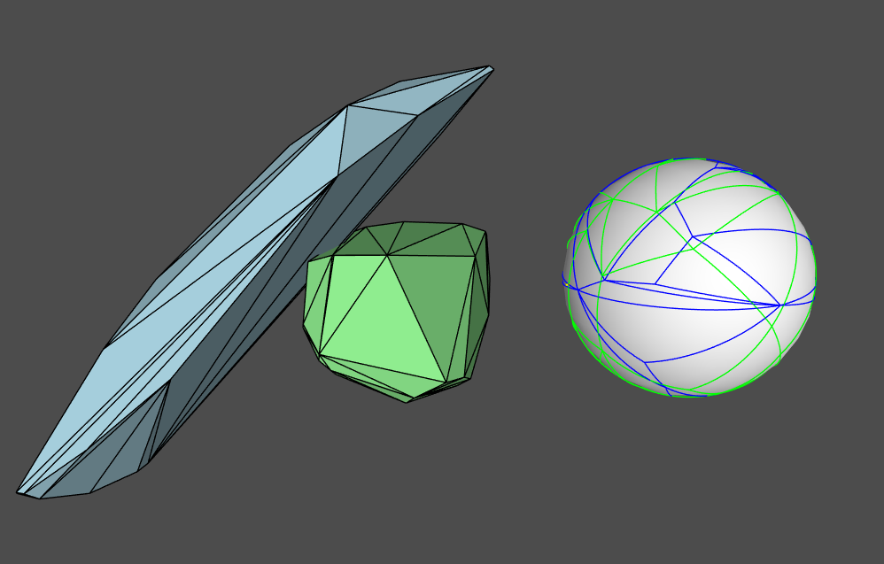
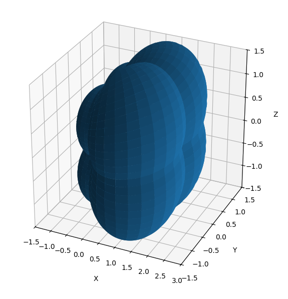
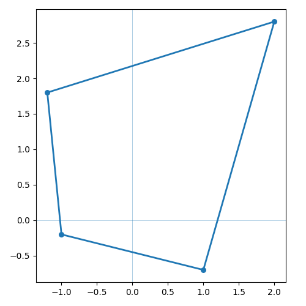
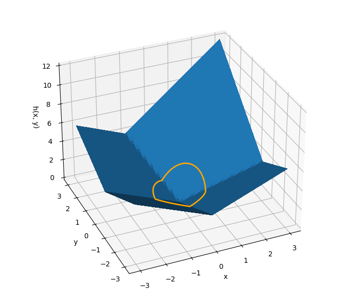
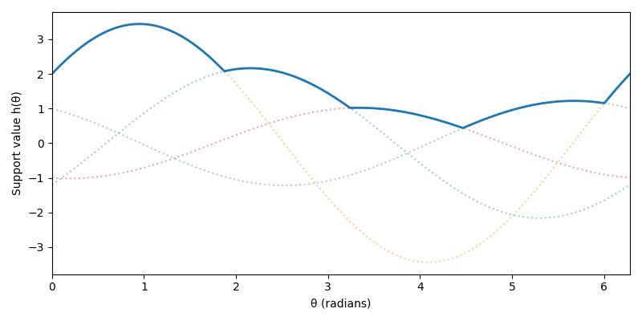
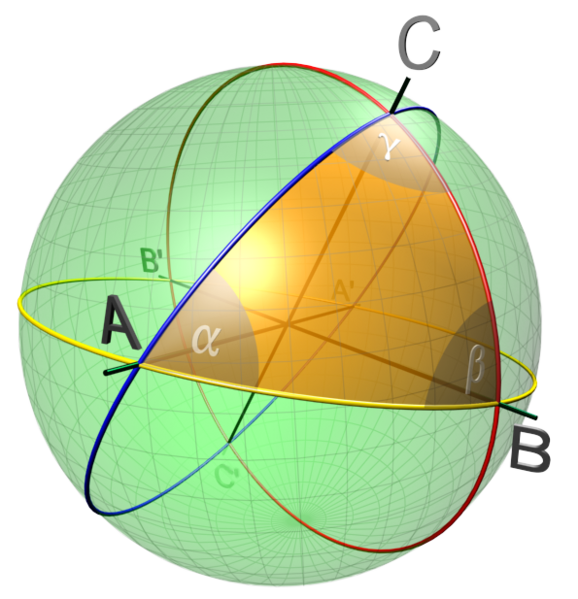
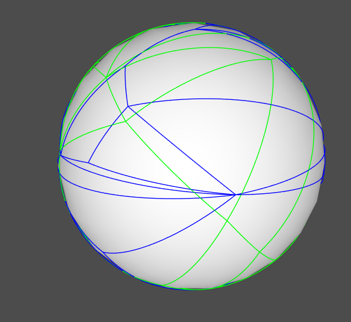
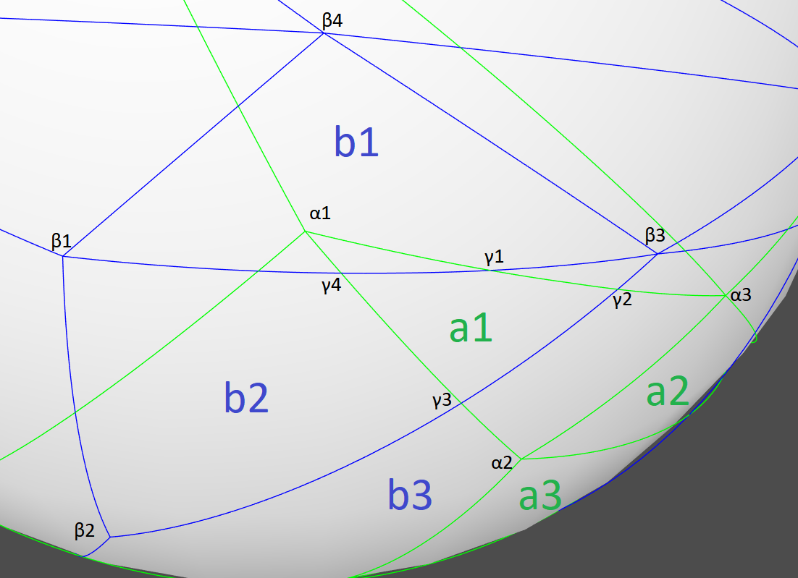
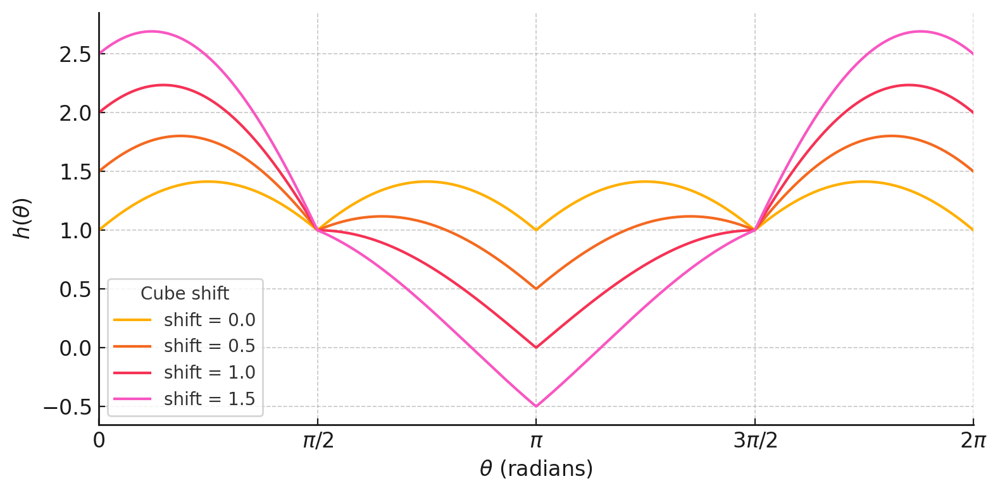

Improvements to the Separating Axis Test
This article will assume some familiarity with narrow phase collision detection methods and associated geometric concepts such as the Minkowski sum.
A few years ago I was watching Dirk’s great presentation, The Separating Axis Test between Convex Polyhedra (video, slides). Around the 18 minute mark (slide 29) he starts talking about overlaying Gauss maps of convex polyhedra to find the faces of their Minkowski difference.

The upshot is that all faces of the minkowski difference are either:
A face of shape \(\boldsymbol{A}\)
A face of shape \(\boldsymbol{B}\)
A cross product of an edge from \(\boldsymbol{A}\) and an edge from \(\boldsymbol{B}\)
And most importantly, you can avoid a costly full support function evaluation in case #3 because you know a vertex that lies on the face. After letting that fact sink, I wondered — why can’t we skip the support function evaluation for all the points on the Gauss map? Turns out you can, the result is a version of the separating axis test that requires only one full support function evaluation as opposed to FaceCountA+FaceCountB. Before we get to the details, let’s back up a bit.
TLDR: Github repo
Collision Detection Formalization
Let A and B be two bounded convex sets in \(\mathbb{R}^{3}\). There are two scenarios:
No overlap — We want the closest point between the two sets.
Overlap — We want to find the minimum translation we can apply to separate the shapes.
Let’s describe each case more formally and discuss solvers that are appropriate.
No Overlap Case
Suppose \(\boldsymbol{A}\) and \(\boldsymbol{B}\) are disjoint sets. The closest pair of points, one from each set, is the pair that minimizes the distance between them. The following formulations are equivalent.
\[\begin{align} \operatorname{dist}(A,B)^2 &= \begin{aligned}[t] &\min_{x,y} \lVert x-y\rVert^2 \\ &x \in A \\ &y \in B \end{aligned} \tag{1} \\[0.5em] &= \begin{aligned}[t] &\min_{x,y} d \\ &d \geq \lVert x-y\rVert^2 \\ &x \in A \\ &y \in B \end{aligned} \tag{2} \\[0.5em] &= \begin{aligned}[t] &\min_{d,z} d \\ &d \geq \lVert z\rVert^2 \\ &z \in A-B \end{aligned} \tag{3} \end{align}\] Notice that the Minkowski difference shows up in the last formulation. Since all of these formulations are convex, iterative convex solvers1 should quickly converge to the global solution. A discussion of non-GJK solvers in games deserves its own post. For the rest of this one, I’ll focus on the overlapping case.
Overlap Case
Suppose \(\boldsymbol{A}\) and \(\boldsymbol{B}\) are intersecting. To push the sets apart we must find a direction \(\boldsymbol{v}\) and a distance \(\boldsymbol{s}\) such that the translated set \(\boldsymbol{(B+s\cdot v)}\) has no intersection with \(\boldsymbol{A}\).
\[\begin{align} s^\star &= \begin{aligned}[t] &\min_{s,v} s \\ &\lVert v\rVert = 1 \\ &(y+s v) \cdot v \geq x \cdot v, \quad \forall x \in A,\ \forall y \in B \end{aligned} \tag{5} \\[0.5em] &= \begin{aligned}[t] &\min_{s,v} s \\ &\lVert v\rVert = 1 \\ &(y-x) \cdot v \geq -s, \quad \forall x \in A,\ \forall y \in B \end{aligned} \tag{6} \\[0.5em] &= \begin{aligned}[t] &\min_{s,v} s \\ &\lVert v\rVert = 1 \\ &z \cdot v \leq s, \quad \forall z \in A-B \end{aligned} \tag{7} \\[0.5em] &= \begin{aligned}[t] &\min_{s,v} s \\ &\lVert v\rVert = 1 \\ &\operatorname{supp}(A-B,v) \leq s \end{aligned} \tag{8} \\[0.5em] &= \min_{\lVert v\rVert=1} \operatorname{supp}(A-B,v) \tag{9} \end{align}\] This problem is not convex due to the quadratic equality constraint \(\boldsymbol{|v|=1}\). For the support functions we care about, this problem can be classified as a non-convex quadratically constrained quadratic program (QCQP). Geometrically, we are minimising a function on the surface of a sphere — much like searching for the lowest elevation on Earth

Hopefully it is clear from the plot above that an iterative solver is not guaranteed to find the global minimum2. Now that we have some language to talk about this optimization problem, the rest of the article will focus on solving this problem and specifically, a variant of the SAT algorithm.
Solving The Overlap Problem
So far, we were able to formulate our problems without relying on any specialized geometry knowledge about Minkowski differences, support functions, Gauss maps, etc. The Minkowski difference and support function appeared naturally in the final formulation, but I intentionally did not want to dwell on them. My goal with this article is to show that this can be modelled as just another optimization problem without using too much hard earned geometry knowledge. I find this is often a good strategy for solving advanced math problems in games3. Start from the most abstract, general version of the problem, and aggressively optimize your solution for the specific case you’re dealing with.
In this case, we are optimizing a function on the unit sphere — formulation (9). So what properties of our objective function can we take advantage of? The objective function is
\[\begin{align*} f(v) &= \max_{z \in C} (z \cdot v) \\ \text{where}\qquad C &= A-B \end{align*}\] Here are some questions we can ask ourselves
Is \(\boldsymbol{f}\) differentiable?
Is \(\boldsymbol{f}\) fast to compute?
If we just computed \(\boldsymbol{f(v)}\) can we compute \(\boldsymbol{f(v+e)}\) quickly for small \(\boldsymbol{e}\)
etc
The optimal solver will look different depending on the answers to these questions. In this case, the answers depend on the set \(\boldsymbol{C}\), e.g. if \(\boldsymbol{C}\) is a ball then our minimization problem is solvable analytically. I began this post talking about convex polyhedra so we are finally getting to the meat and potatoes.
Overlap Problem for Convex Polyhedra
For the rest of this post we will assume that \(\boldsymbol{C}\) is a convex polyhedron defined as the convex hull of vertices \(\boldsymbol{c_{1}, c_{2}, \dots c_{n}}\).
Example in 2D
To get our feet wet, let’s plot the support function for \(\boldsymbol{C}\) defined by the following vertices
\[\begin{equation*} \begin{aligned} c_1 &= \begin{bmatrix}-1.2 & 1.8\end{bmatrix} & c_2 &= \begin{bmatrix} 2 & 2.8\end{bmatrix} \\ c_3 &= \begin{bmatrix} 1 & -0.7\end{bmatrix} & c_4 &= \begin{bmatrix}-1 & -0.2\end{bmatrix} \end{aligned} \end{equation*}\] Below are plots of the polygon, a plot of the support function in \(\boldsymbol{\mathbb{R}^{2}}\) and a cartesian plot of the support function on the circle, from 0 to \(\boldsymbol{2\pi}\).



From the last two plots it is easy to extract a few useful properties about \(\boldsymbol{f(v)}\):
The function is differentiable except for a finite number of points where there are kinks — discontinuities in the first derivative.
Each differentiable region corresponds to a vertex of our polygon and when constrained to that region, the function is concave. We will call these regions of the sphere vertex regions. Remember that \(\boldsymbol{C = A - B}\) so each vertex region actually corresponds to a pair of vertices, one from \(\boldsymbol{A}\) and one from \(\boldsymbol{B}\).
From the definition of the support function, the kinks occur when e.g. when
\(\boldsymbol{c_{1} \cdot v = c_{2} \cdot v}\), which implies they occur at the point on the sphere satisfying
\(\boldsymbol{(c_{1} - c_{2}) \cdot v = 0}\). This means \(\boldsymbol{v}\) must be perpendicular to the edge of the polygon. In other words the kinks occur at the face normals of \(\boldsymbol{C}\). This is also intuitive, imagine what happens as the support direction sweeps from one vertex to another. In the middle it will be perpendicular to the polygon face and the projection along that direction of both face vertices will be the same.
These properties can be proven using definition of the support function if you want to be rigorous. From calculus, we know that the minimum of \(\boldsymbol{f(\theta)}\) restricted to a vertex region must occur at the boundary. Then globally the minimum must occur at one of the kink points, this gives us a global solver. We simply evaluate \(\boldsymbol{f}\) at all the kink points and pick the minimum value. In this example it is simple to enumerate the kinks because we specified all the vertices which can be used to derive the face normals. In practice we know the vertices of \(\boldsymbol{A}\) and \(\boldsymbol{B}\) and don’t explicitly construct \(\boldsymbol{C}\). However this is not a problem since \(\boldsymbol{\operatorname{supp}(A-B, v) = \operatorname{supp}(A, v) + \operatorname{supp}(B,-v)}\) and the kink points of a sum of functions are the union of the kink points from the individual functions. So in practice we would evaluate \(\boldsymbol{f}\) at all the normals of \(\boldsymbol{A}\) and the normals of \(\boldsymbol{B}\) and pick the minimum value. Hopefully you have realized that what we have discovered is the regular separating axis test in 2D. Notice that we didn’t do much geometry, we just used some basic calculus facts. This 2D case is very similar to the 3D case which we will look at next.
General case in 3D
In \(\boldsymbol{\mathbb{R}^{2}}\) the discontinuities of the support function’s derivative were along lines passing through the origin and the intersection of the lines with the circle were points. In \(\boldsymbol{\mathbb{R}^{3}}\) it shouldn’t be a stretch that the discontinuities of the support function lie within planes passing through the origin. Restricted to the sphere, these discontinuity sets form great-circle arcs

If we plot the discontinuities coming from both \(\boldsymbol{A}\) and \(\boldsymbol{B}\) we get a picture like I showed in the beginning of the article.

In the 3D case our objective function has similar properties to 2D:
The vertex region for \(\boldsymbol{c_{i}}\) is bounded by \(\boldsymbol{K_{i}}\) planes. The plane separating two neighboring vertex regions corresponding to \(\boldsymbol{c_{1}}\) and \(\boldsymbol{c_{2}}\) is defined by
\(\boldsymbol{(c_{1} - c_{2}) \cdot v = 0}\).The boundary curve for a vertex region has \(\boldsymbol{K_{i}}\) discontinuities which are located at the face normals. The line of reasoning from 2D can be generalized to 3D. Since the face normals occur at intersections of geodesic arcs, we have that face normals are parallel or antiparallel to the cross product of any two nonparallel edges of the face.
The minimum of \(\boldsymbol{f}\) over a vertex region occurs at the face normals. A similar calculus argument can be used here. The min over the 2D portion occurs at its boundary. The min of the 1D portion occurs at its boundary.
The global min can be found by enumerating all face normals (vertex region boundary kinks).
From the last property above we get the separating axis test described by Dirk’s presentation. Namely, iterate over all face normals of the minkowski difference and calculate the projection. The important optimization that Dirk points out is that the new face normals formed by cross products can avoid a full support function evaluation because you know a vertex that lies on the face of the Minkowski difference. We can take this idea further and save the support function evaluation for all face normals (except one) because it should be clear that we can determine neighboring vertex regions for each face normal.
Optimized SAT Test
Here’s the main idea. Traverse the arcs on the sphere using a graph traversal algorithm and as you traverse keep track of the support point for each region. In more detail
Pick a point \(\boldsymbol{w}\) on one of the arc end points in figure (7) and calculate the vertex region you are in \(\boldsymbol{A}\) and \(\boldsymbol{-B}\). I.e. calculate \(\boldsymbol{\operatorname{supp}(A,w)}\) and \(\boldsymbol{\operatorname{supp}(-B,w)}\) and keep track of the vertices \(\boldsymbol{a, b}\).
Follow the arc and as you move across the sphere keep track of which other arcs you intersect. Every time you hit an arc you enter into a new vertex region.
Every intersection or endpoint \(\boldsymbol{w}\) you traverse is a face normal and the support function is simply \(\boldsymbol{w \cdot (a - b)}\)
Let us consider a concrete example using the diagram below. Denote the face normals by greek letters with \(\boldsymbol{\alpha_{i}}\), \(\boldsymbol{\beta_{i}}\) and \(\boldsymbol{\gamma_{i}}\) corresponding to the face normals of \(\boldsymbol{A}\), \(\boldsymbol{-B}\) and the new face normals of \(\boldsymbol{A-B}\) respectively. Similarly, the latin alphabet is used to denote the vertex regions of \(\boldsymbol{A}\) and \(\boldsymbol{-B}\). That is, if \(\boldsymbol{G}\) is the intersection of regions labeled \(\boldsymbol{a_{1 }}\) and \(\boldsymbol{b_{2 }}\) then
\[\begin{equation} \tag{10} \operatorname{supp}(A-B,v) = (a_1-b_2) \cdot v, \qquad \text{for all } v \in G \end{equation}\]

Here are the first few iterations of the example
Start at \(\boldsymbol{\alpha_{1 }}\) arbitrarily and calculate the the vertex region \(\boldsymbol{b_{1}}\) using a full evaluation of the support function of \(\boldsymbol{B}\). We know that we are also in \(\boldsymbol{a_{1}}\) for free. Record
\(\boldsymbol{f(\alpha_{1}) = \alpha_{1} \cdot (a_{1} - b_{1})}\).Begin traversing the arc from \(\boldsymbol{\alpha_{1 }}\) to \(\boldsymbol{\alpha_{2 }}\) and find that you intersect the arc
between \(\boldsymbol{\beta_{1 }}\) and \(\boldsymbol{\beta_{3 }}\) , the intersection point is \(\boldsymbol{\gamma_{4}}\). Record \(\boldsymbol{f(\gamma_{4}) = \gamma_{4} \cdot (a_{1} - b_{1})}\).Passing through the plane in the previous step moved you move from region \(\boldsymbol{b_{1}}\) to region \(\boldsymbol{b_{2}}\). Keep moving from \(\boldsymbol{\gamma_{4 }}\) to \(\boldsymbol{\gamma_{3 }}\) and record \(\boldsymbol{f(\gamma_{3}) = \gamma_{3} \cdot (a_{1} - b_{2})}\)
Continue on moving from \(\boldsymbol{\gamma_{3 }}\) to \(\boldsymbol{\alpha_{2 }}\) . Since we intersected another plane defined by the arc between \(\boldsymbol{\beta_{2 }}\) and \(\boldsymbol{\beta_{3 }}\) we will update our vertex region to \(\boldsymbol{b_{3}}\) . Record \(\boldsymbol{f(\alpha_{2}) = \alpha_{2} \cdot (a_{1} - b_{3})}\).
Continue this process until all arcs of \(\boldsymbol{A}\) have been traversed.
That is pretty much the whole idea. There are a lot of important implementation details like what data structures to use and how to implement arc tracing and intersection tests but this post is already getting too long. If you are curious about the nitty gritty details you can browse the code linked at the beginning and end of the article. In broad strokes these are some of the must haves
Use some variant of a half edge data structure. You need as much topological information you can get. For each vertex I store a flat array of all its connected edges. For each edge I also store the face on each side of the edge.
struct Edge
{
uint8_t vert0, vert1;
uint8_t face0, face1;
};Sort hull edges topologically by arc connectivity so that during traversal every new arc you traverse you know you have already started or terminated at it.
Ensure your hull builder produces high quality hulls. Like the regular separating axis test, this algorithm is sensitive to the quality of the hull. However I haven’t noticed any numerical issues so far that are any worse than regular SAT.
Conclusion
We’ve covered a different way to look at the Separating Axis Test, not as a purely geometric algorithm, but as an optimization problem on a sphere. By analyzing the properties of the support function, we found its minimum must lie on the "kinks" formed by the intersection of great circles on a Gauss map.
The key insight is that this map is just a graph that we can incrementally traverse. Instead of re-calculating the support function at each node (face normal), we can perform one initial calculation and then traverse the graph, updating the support vertex cheaply as we cross the boundaries (arcs) into new regions. This is essentially the same support function optimization that many physics engines call hill climbing.
If you want to see it in action, I’ve put together a demo for Visual Studio on Windows where you can compare the two methods and visualize gauss maps. In my testing, this graph-traversal approach is 5-10x faster than the regular SAT for convex hulls with many faces. For hull vs triangle the speed up is ~1.2x due to fewer edge cross products. Additionally, the version of the algorithm implemented in the demo has some numerical problems with triangles. I’m not sure if it’s due to contact generation or collision detection. This problem is completely fixable and I had it working at some point but the branch seems to be lost to the sands of time. Hopefully I can find some time to get it working again.
I discovered this traversal method independently, but as with most problems in computational geometry, it was probably first solved by someone in the 70s. If this algorithm has a name or if you know of any games that use a similar technique, please let me know! I’d love to learn more about its history.
Earlier discussion
9 archived comments.
Footnotes
GJK is one of the most popular iterative solver but any convex optimization algorithm should work. Iterative methods can also be warm started like GJK using previous solutions. There are a plethora of iterative convex solvers, examples include interior-point methods, gradient descent methods, the ellipsoid method, etc.↩︎
However \(\boldsymbol{f(v)}\) constrained to the sphere becomes better behaved as origin moves closer to the hull boundary. Below is a cross section of the support function of the unit cube as it is shifted away from the origin. Notice that the support functions starts to look convex away from 0 radians.
↩︎
image A philosophy I learned from Chris Hecker’s great GDC lecture Lemke’s Algorithm: The Hammer in Your Math Toolbox↩︎
Are you writing a new physics engine?
Btw, did you know we started the Newton physics effort, with various companies? People from MuJoCo, PhysX, Warp and Disney are joining forces: https://github.com/newton-physics/newton
I have a project that I am working on as a hobby. I'd like to blog about it eventually.
I did see newton, very exciting time for physics programmers!
Thanks for the interesting article. It is hard to beat brute force SIMD code with anything complex for small problems.I recall hillclimbing, but for smallish convexes brute force SIMD was fastest. In Bullet we use this, but that code is ancient now:
https://github.com/bulletphysics/bullet3/blob/master/src/LinearMath/btVector3.cpp#L46
Thanks for sharing! Yeah the traversal part can't benefit from SIMD but the "portal" intersection can. Very similar to using SIMD for dot products.
https://gist.github.com/cairnc/eeb770237a18e7e7db7ac9b9cee1db18
Hi, I'm the author of the SAT chapter in Physics Pearls book.
Long ago (10-15 years, so my memry is fuzzy), I implemented this very idea. The scan without some O(N^2) loop is nontrivial - I used O(N+M) Bentely-Ottmann algorithm for finding all the edge-edge intersections of the gauss maps.
It has awesome theoretical properties because you're essentially just enumerating the very minimal set of axes, and you don't even have to evaluate support function for them! The perf bottleneck was the graph algorithm itself: it took ~100 vertex hull for it to start being faster than the highly SIMDizeable sweep of classic SAT (with the optimization you're mentioning here).
I implemented two variants sweeping from north to south and west to east (planar graphs of a sphere are a bit tricky), but ultimately 100 vertex hulls aren't super useful in games, so I dropped the idea.
It'd be very humbling to find out I was wrong and there is a fast algorithm to find all the intersections that makes this idea workable for smaller (~10 verts) hulls. I'd appreciate if you described the algorithm, as I can't tell what it is from skimming the code. At which point is it faster than SIMDized optimized classic SAT? I didn't try any other algorithms but BO, it's probably possible to make a practical BVH on the gauss map that works better, but I haven't tried it. BO is quite fast, but it's hard to beat the speed of a simple optimized SIMDized loop.
Hello Sergiy, thank you for the history. I have not read physics pearls but I learned alot from your valve presentation.
Yes that is what my algorithm is doing, you do need to evaluate one support function to seed it.
However moving between vertex regions you have to do a ray cast against a linear convex cone which I think when you tally it all up might not be much better. I also realized I uploaded the wrong version of the code to github.
Edit: I had a link here but it was also the wrong version so I removed it to avoid confusing people. It has been a few years since I looked at this code and I had so many branches that its hard to remember which one is the right one.
Edit 2: Ok I think I found the right version. I will update the version in the repo but this one is much simpler. I was experimenting with pretransforming geometry (since you can do it fast with SIMD) but you can ignore that part and just calculate the geometry of B in the space of A on the fly. https://gist.github.com/cairnc/cf6ecbd43ee7552c10cfcd1c448769ed
Also don't ask me why it is in C
I will leave this code but I just realized this is also not quite the right version. This version still does all the full support function evaluations for the faces normals of A. To remove this, as you trace the edges of B every arc you hit you save the min dot product from your origin vertex region. I.e. you relax the values of the support function for A's face normals. Since every face normal of A is contained in a vertex region of B, traversing all the arcs of B will mean that you've computed the dot product of a face in A with a vertex from its MD.
If a normal from A is not connected to an arc that directly intersects an arc from B then you do flood fill at the end to color those "islands" which are entirely contained in a vertex region of A.
I'll leave it there and keep looking for the code. I'll include a more detailed explanation in the next post.
I updated the code in github to use the correct algorithm. I could not find the code so I tried to reimplement it from memory. It seems to be working…
Unsurprisingly the cost to move between regions ends up costing the same as full support evaluation. I suspect this is some theoretical limit for small hulls and you can probably prove it using Euler's polyhedron formula. Oh well!
Perhaps a better name for this article would be "How to get the same result in a more round about way" but it doesn't quite have the same ring to it.
In any case, it is yet to be seen whether its SIMDized version is better than a SIMD version of the traditional algorithm. In any case here is both methods side by side. Each in a standalone function. I've tried to comment the graph traversal approach
https://gist.github.com/cairnc/039a0a8253db33991fd9dd0bf2e01e0c
Thanks for sharing the code!
Yes, this is still superlinear loop, with numerical issues, but IMHO it still hints at the possibility of a better complexity algorithm. The optimization that tests that arcs overlap on gauss map obviates the necessity to compute full support for arc-arc cases, like you correctly observed. That's step 1. Step 2 is the unnecessary O(N^2) scan over all the arc-arc (edge-edge) pairs. It's unnecessary because there is an algorithm that finds intersecting pairs in O(N+M) time and space. Unfortunately, sometimes O(N^2) is better because the constant is small. The side effect of Step 2 is that we don't have to compute support for Face-Vertex cases because the algorithm will give us information about which vertex region contains which face normal. That removes the O(F*V) step, which is another source of quadratic complexity.
My Bentely-Ottmann implementation took about 1300 lines of code with all the debug and logging code included, so it's not all that complex. And it's basically returning you the arc-arc intersections without having to loop through neighbors throwing away most of the portal candidates. I'd encourage you to try it. I wasn't successful at making it competitive for small practical hulls, but I may have missed something.
But fundamentally, like you observed, it's a concave optimization problem. There's no easy way (that I know of) to make it sublinear. You still have to diligently test every single axis you find, so it's still O(F+M) (M= number of arc-arc intersections of overlaid gauss maps). GJK can skip over swaths of vertices, never testing them, it can be warmstarted and it's incremental. SAT is fundamentally different. Step 3 would be to build some kind of BVH over the gauss map and maybe a primal-dual kind of iteration to quickly zoom into the correct region that contains the answer. I implemented Expanding Polytope Algorithm many years ago, it has some of these qualities, but just like with Bentley-Ottmann it's just too complicated for practical purposes.